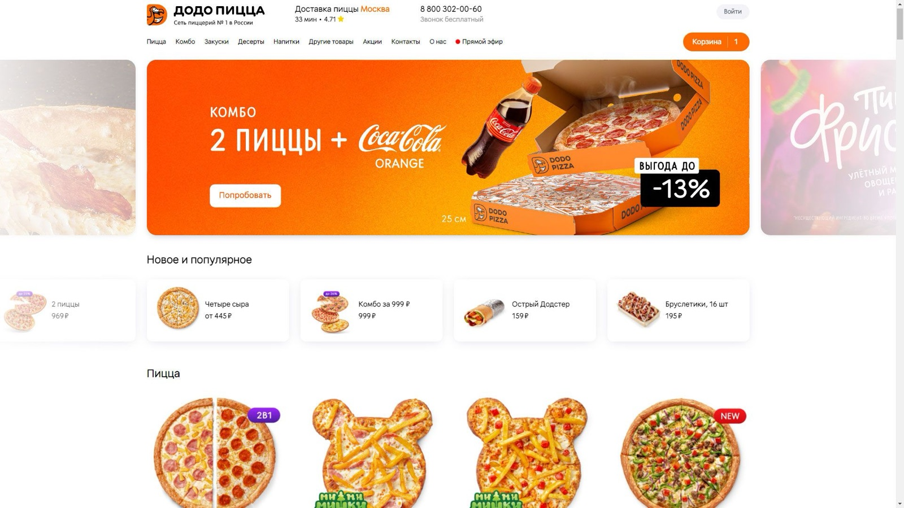
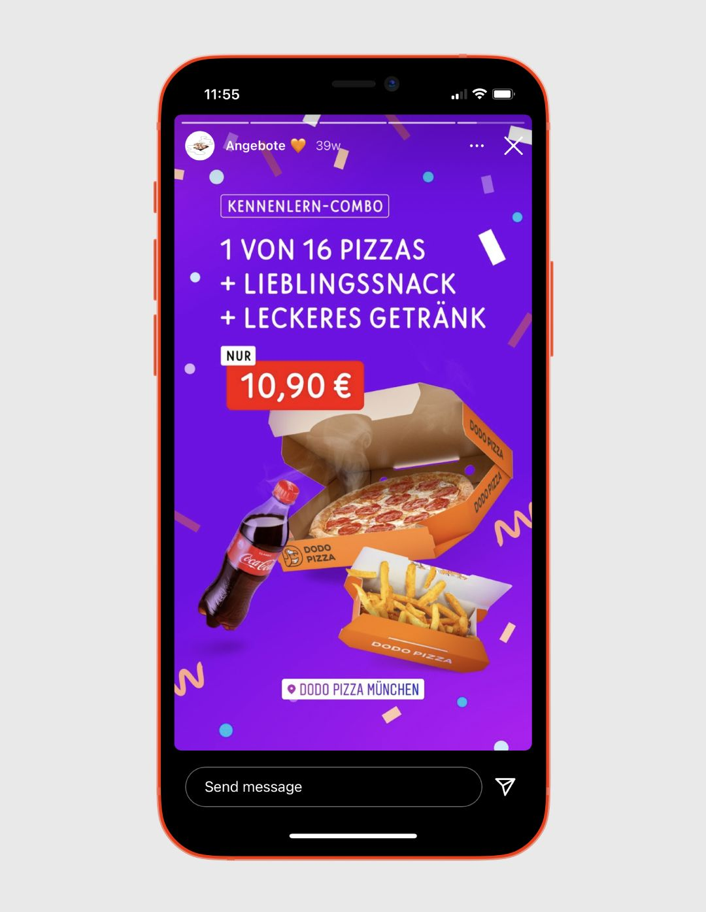
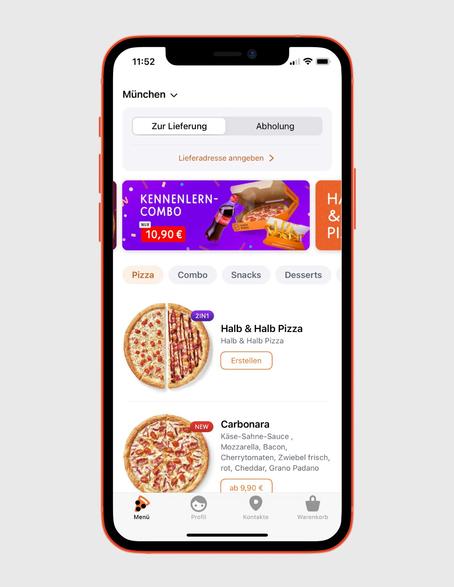
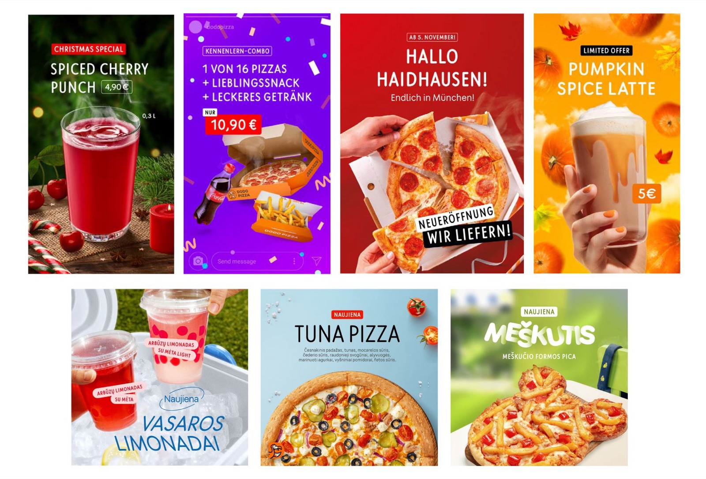
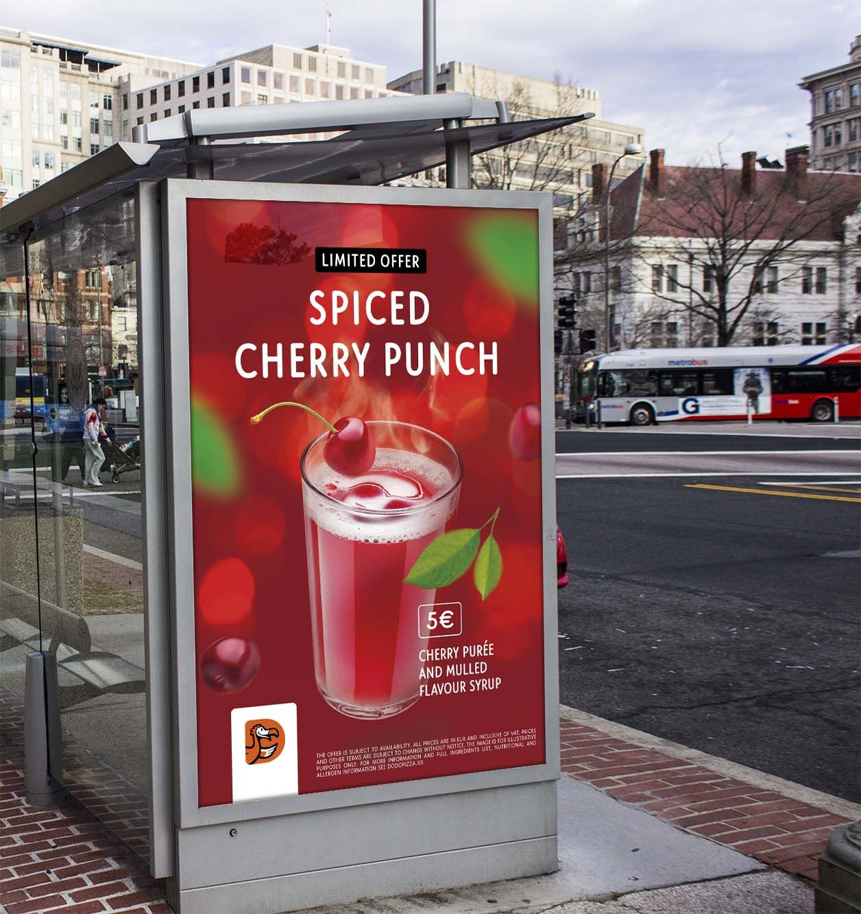
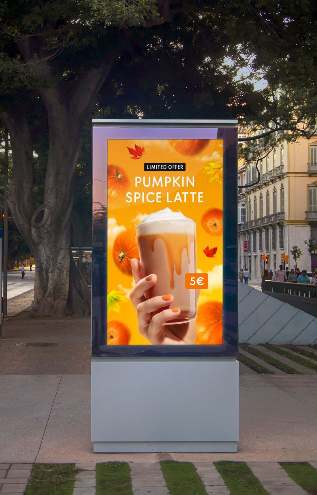
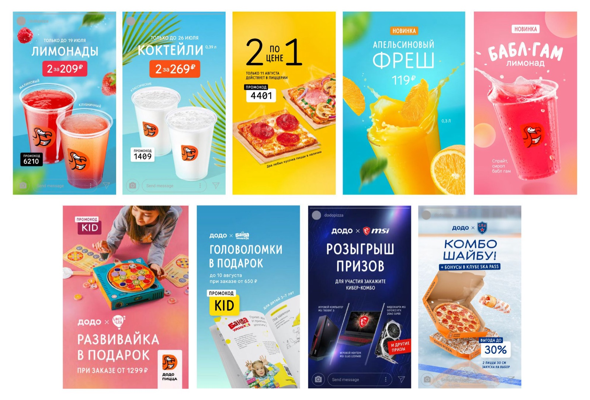

01
Brand Analysis & Visual Strategy
- Immersed myself in Dodo Pizza’s visual identity and digital tone of voice to ensure brand consistency across all assets.
- Analyzed user behavior within the app and on social media to tailor visuals for maximum relevance and impact.
- Developed a visual strategy for digital assets that balanced aesthetic appeal with clear communication of offers and calls to action.

02
Concept Development & Design
- Designed static and animated in-app banners promoting seasonal offers, product launches, and limited-time deals.
- Created branded templates and layouts for Instagram stories, ensuring content was instantly recognizable and aligned with Dodo Pizza’s tone — playful, bold, and friendly.
- Developed a series of modular post designs for social media that could be quickly adapted to different campaigns and formats.


03
Content Optimization by Platform
- Adapted visuals for multiple screen sizes and platforms, considering user interaction patterns in mobile-first environments.
- Designed Instagram stories and posts with high attention to hierarchy, color, and movement to encourage engagement.
- Ensured that in-app banners were not only visually appealing but also optimized for fast loading and effective click-through rates.

04
Collaboration & Delivery
- Worked closely with product and marketing teams to align visual content with ongoing promotions and campaign timelines.
- Delivered assets in a variety of formats and resolutions, following technical specifications for mobile apps and social media platforms.
- Iterated on designs based on performance analytics and A/B test results, contributing to data-driven visual improvements.


05
Results & Impact
This project strengthened Dodo Pizza’s visual communication across digital touchpoints. The assets contributed to increased user interaction in the app, higher engagement on social media, and strong brand consistency across platforms — all while keeping the design fresh, fun, and unmistakably Dodo.
